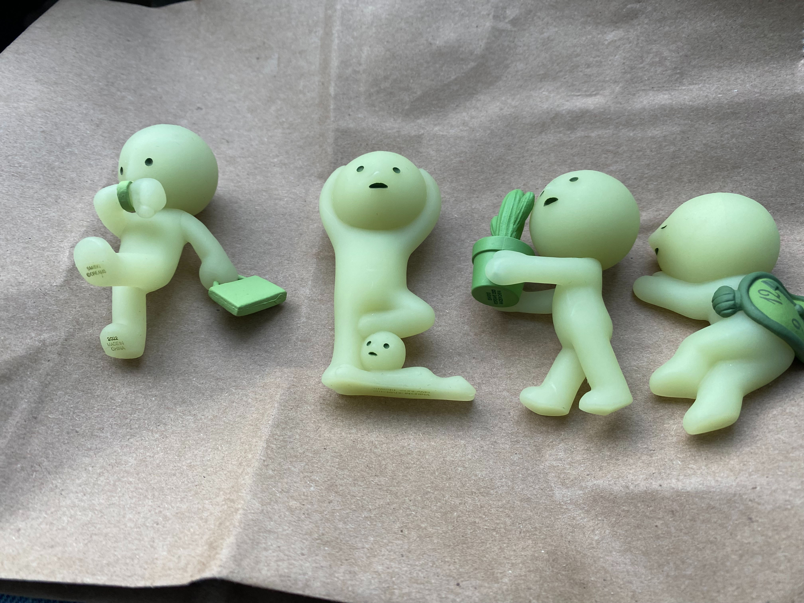

Music
i really love alice phoebe lou her music changed my life it got me through the hardest times of success academy when I thought I would surely fail my classes
VIEW MUSICFood
If you eat disgusting food that looks pretty you're part of the problem. You're only doing it for the attention and not for the beautiful taste in your mouth.
VIEW FOOD
Collectibles
There's a special thing about collecting little things, it really brings out your inner personality and aesthetic. And that is why it's performative, it shows who you really are.
VIEW TRINKETS